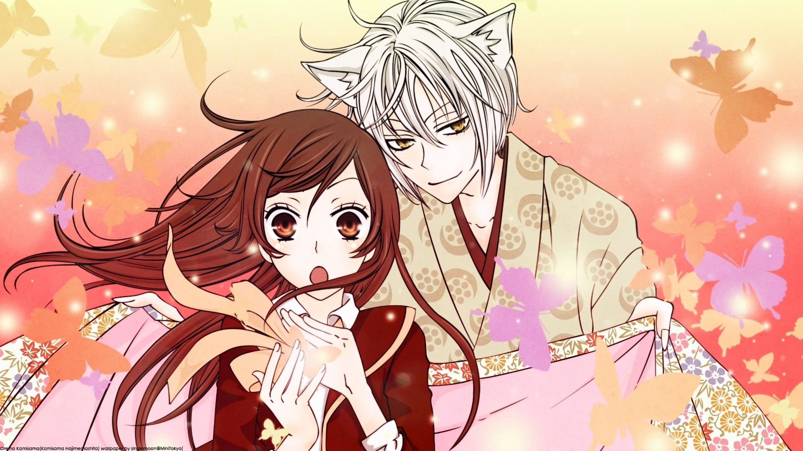

Kamisama Kiss
9 / 10
High schooler Nanami Momozono has quite a few problems of late, beginning with her absentee father being in such extreme debt that they lose everything. Downtrodden and homeless, she runs into a man being harassed by a dog. After helping him, she explains her situation, and to her surprise, he offers her his home in gratitude. But when she discovers that said home is a rundown shrine, she tries to leave; however, she is caught by two shrine spirits and a fox familiar named Tomoe.
Studio : TMS Entertainment
Type : TV Series
Release date : October 11, 2012